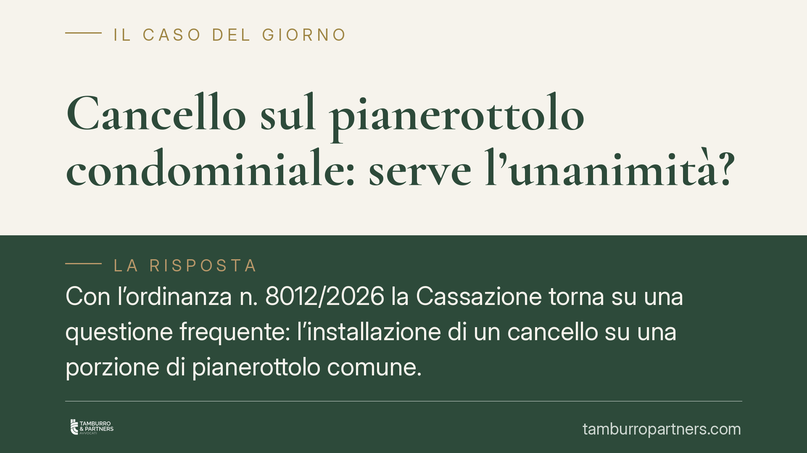

Cancello sul pianerottolo condominiale: serve l'unanimità?
Con l'ordinanza n. 8012/2026 la Cassazione torna su una questione frequente: l'installazione di un cancello su una porzione di pianerottolo comune. La Corte esclude la necessità del consenso unanime, ammettendo la delibera a maggioranza purché l'uso individuale non alteri la destinazione del bene né limiti il pari diritto degli altri condòmini. Vediamo cosa cambia in concreto.

Il caso deciso dalla Cassazione
Una condomina aveva installato un cancello su una parte del pianerottolo comune, delimitando di fatto l'accesso a un'area antistante la propria abitazione. Un'altra condomina, dissenziente, contestava l'intervento sostenendo che, trattandosi di bene comune, fosse necessario il consenso di tutti i partecipanti.
La Corte di Cassazione, con l'ordinanza n. 8012/2026, ha respinto questa impostazione. Il punto centrale non è tanto la titolarità del bene — che resta comune — quanto il rispetto dei limiti che la legge pone all'uso individuale delle cose condominiali.
Inquadramento normativo
La norma di riferimento è l'art. 1102 del codice civile, che disciplina l'uso della cosa comune da parte del singolo condomino. La disposizione consente a ciascuno di servirsi del bene comune, e anche di apportarvi modifiche a proprie spese, a due condizioni: non alterare la destinazione del bene e non impedire agli altri partecipanti di farne pari uso.
Sono i cosiddetti "due limiti" dell'uso individuale. Finché entrambi sono rispettati, il condomino può intervenire sul bene comune senza dover chiedere il permesso degli altri, e a maggior ragione senza il loro consenso unanime.
La Corte richiama inoltre l'art. 1131 c.c. in tema di rappresentanza dell'amministratore e legittimazione processuale, aspetto rilevante quando la controversia investe scelte assembleari.
Il principio è consolidato: l'unanimità è richiesta per gli atti che incidono in modo permanente sulla destinazione della cosa comune o sui diritti dei singoli, non per il semplice uso più intenso di una porzione, purché compatibile con il godimento altrui.
Cosa significa in concreto
La decisione sposta l'attenzione dal formalismo del quorum alla sostanza dell'intervento. Un cancello sul pianerottolo può essere legittimo o illegittimo a seconda di come è realizzato e di cosa comporta per gli altri.
È tendenzialmente ammissibile quando:
- non impedisce il passaggio o l'accesso agli altri condòmini verso spazi che devono restare fruibili;
- non modifica in modo stabile la funzione del pianerottolo come area di transito comune;
- non compromette l'estetica o la sicurezza dell'edificio in misura apprezzabile.
Diventa invece contestabile quando sottrae di fatto una parte comune all'uso collettivo, trasformandola in pertinenza esclusiva di un solo appartamento, o quando ostacola l'accesso a impianti, contatori, vani tecnici o alle altre unità immobiliari.
Per il condomino dissenziente, la strada non è invocare automaticamente l'unanimità mancante, ma dimostrare in concreto la violazione di uno dei limiti dell'art. 1102: che il cancello altera la destinazione del bene o pregiudica il proprio pari uso.
Per chi intende installare il cancello, la delibera a maggioranza o l'esercizio del diritto individuale non basta di per sé: occorre verificare in anticipo che l'intervento non travalichi quei limiti, perché sarà questo il terreno di un'eventuale controversia.
Cosa fare in concreto
- Verificate il titolo e i limiti d'uso: prima di installare, accertate che il cancello non escluda gli altri condòmini dal pari uso della porzione comune e non ne alteri la destinazione a transito.
- Documentate lo stato dei luoghi: raccogliete fotografie, planimetrie e misurazioni che attestino la larghezza di passaggio residua e l'accessibilità di impianti e altre unità.
- Portate la questione in assemblea: anche quando ritenete di poter agire in via individuale, una delibera trasparente riduce il rischio di contenzioso e chiarisce le responsabilità.
- Se siete dissenzienti, motivate l'opposizione: non limitatevi a lamentare la mancanza di unanimità; indicate in modo specifico in cosa consiste il pregiudizio al vostro uso o l'alterazione della destinazione.
- Valutate una consulenza preventiva: il confine tra uso legittimo e appropriazione della cosa comune è sottile e dipende dai fatti concreti; un esame anticipato evita interventi da rimuovere in seguito.
---
*Contributo informativo a cura di Tamburro & Partners - Avv. Giuseppe Tamburro. Non costituisce parere legale.*
Ogni condominio ha una storia a sé.
Se gestisci un'amministrazione e vuoi un confronto su una specifica questione condominiale, scrivi allo studio. Ti rispondiamo entro un giorno lavorativo.